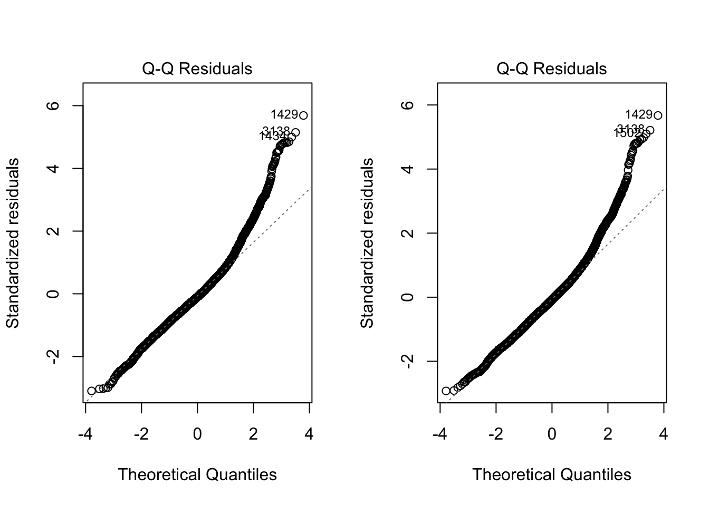

── Attaching core tidyverse packages ──────────────────────── tidyverse 2.0.0 ──
✔ dplyr 1.1.4 ✔ readr 2.1.5
✔ forcats 1.0.0 ✔ stringr 1.5.1
✔ ggplot2 3.5.1 ✔ tibble 3.2.1
✔ lubridate 1.9.4 ✔ tidyr 1.3.1
✔ purrr 1.0.4
── Conflicts ────────────────────────────────────────── tidyverse_conflicts() ──
✖ dplyr::filter() masks stats::filter()
✖ dplyr::lag() masks stats::lag()
ℹ Use the conflicted package (<http://conflicted.r-lib.org/>) to force all conflicts to become errors
f <-"https://raw.githubusercontent.com/difiore/ada-datasets/refs/heads/main/AVONETdataset1.csv"d <-read_csv(f, col_names =TRUE)
Rows: 11009 Columns: 37
── Column specification ────────────────────────────────────────────────────────
Delimiter: ","
chr (13): Species1, Family1, Order1, Avibase.ID1, Mass.Source, Mass.Refs.Oth...
dbl (24): Sequence, Total.individuals, Female, Male, Unknown, Complete.measu...
ℹ Use `spec()` to retrieve the full column specification for this data.
ℹ Specify the column types or set `show_col_types = FALSE` to quiet this message.
# Trophic Level boxplotcleaned_data_trophic <- d |>drop_na(Trophic.Level)ggplot(data = cleaned_data_trophic, aes(x = Trophic.Level, y =log(Mass))) +geom_boxplot() +labs(title ="Log(Mass) by Trophic Level")
# Migration boxplotcleaned_data_migration <- d |>drop_na(Migration) |>mutate(Migration =as.factor(Migration))ggplot(data = cleaned_data_migration, aes(x = Migration, y =log(Mass))) +geom_boxplot() +labs(title ="Log(Mass) by Migration Type")
Step 2
m1 <-lm(log(Mass) ~ Trophic.Level, data = cleaned_data_trophic)m2 <-lm(log(Mass) ~ Migration, data = cleaned_data_migration)summary(m1)
Call:
lm(formula = log(Mass) ~ Trophic.Level, data = cleaned_data_trophic)
Residuals:
Min 1Q Median 3Q Max
-3.4229 -1.1551 -0.3028 0.8982 7.5526
Coefficients:
Estimate Std. Error t value Pr(>|t|)
(Intercept) 3.80834 0.01967 193.632 < 2e-16 ***
Trophic.LevelHerbivore 0.25639 0.03406 7.528 5.54e-14 ***
Trophic.LevelOmnivore 0.01422 0.04116 0.345 0.73
Trophic.LevelScavenger 4.63189 0.34447 13.446 < 2e-16 ***
---
Signif. codes: 0 '***' 0.001 '**' 0.01 '*' 0.05 '.' 0.1 ' ' 1
Residual standard error: 1.538 on 11000 degrees of freedom
Multiple R-squared: 0.02094, Adjusted R-squared: 0.02067
F-statistic: 78.42 on 3 and 11000 DF, p-value: < 2.2e-16
summary(m2)
Call:
lm(formula = log(Mass) ~ Migration, data = cleaned_data_migration)
Residuals:
Min 1Q Median 3Q Max
-3.8924 -1.1769 -0.3088 0.9152 7.8427
Coefficients:
Estimate Std. Error t value Pr(>|t|)
(Intercept) 3.77457 0.01636 230.710 < 2e-16 ***
Migration2 0.75971 0.04731 16.059 < 2e-16 ***
Migration3 0.37647 0.05155 7.303 3.02e-13 ***
---
Signif. codes: 0 '***' 0.001 '**' 0.01 '*' 0.05 '.' 0.1 ' ' 1
Residual standard error: 1.535 on 10983 degrees of freedom
Multiple R-squared: 0.02563, Adjusted R-squared: 0.02546
F-statistic: 144.5 on 2 and 10983 DF, p-value: < 2.2e-16
#Examine the output of the resultant linear models. Is log(Mass) associated with either Trophic.Level or Migration category? That is, in the global test of significance, is the F statistic large enough to reject the null hypothesis of an F value of zero?
Since the F-statistic for the Trophic.Level model is 78.42 (p < 2.2e-16), and for the Migration model is 144.5 (p < 2.2e-16), there is strong statistical evidence that log(Mass) is associated with both Trophic.Level and Migration category. We reject the null hypothesis in both cases, concluding that variation in log(Mass) is significantly explained by these categorical variables.
#There is no coefficient for Migration 1, which means that Migration =1 is the reference level. Each coefficient represents the difference in log(Mass) compared to Migration 1:
Migration 2 is 0.76 higher in log(Mass) than Migration (p<0.001)
Migration 3 is 0.38 higher in log(Mass) than Migration 1 (p < 0.001)
Therefore, Migration 2 and Migration 3 are both significantly. different from Migration 1.
Step 3
#fit the anova modelaov_migration <-aov(log(Mass) ~ Migration, data = cleaned_data_migration)#Tukey HSDtukey_result <-TukeyHSD(aov_migration)tukey_result
Tukey multiple comparisons of means
95% family-wise confidence level
Fit: aov(formula = log(Mass) ~ Migration, data = cleaned_data_migration)
$Migration
diff lwr upr p adj
2-1 0.7597067 0.6488157 0.8705977 0
3-1 0.3764693 0.2556282 0.4973105 0
3-2 -0.3832374 -0.5380211 -0.2284536 0
# Get p-valuep_value <-get_p_value(permuted_F, obs_fstat, direction ="greater")
Warning: Please be cautious in reporting a p-value of 0. This result is an approximation
based on the number of `reps` chosen in the `generate()` step.
ℹ See `get_p_value()` (`?infer::get_p_value()`) for more information.
p_value
# A tibble: 1 × 1
p_value
<dbl>
1 0
Challenge 2
library(tidyverse)# Re-load the full AVONET datasetf <-"https://raw.githubusercontent.com/difiore/ada-datasets/refs/heads/main/AVONETdataset1.csv"d <-read_csv(f)
Rows: 11009 Columns: 37
── Column specification ────────────────────────────────────────────────────────
Delimiter: ","
chr (13): Species1, Family1, Order1, Avibase.ID1, Mass.Source, Mass.Refs.Oth...
dbl (24): Sequence, Total.individuals, Female, Male, Unknown, Complete.measu...
ℹ Use `spec()` to retrieve the full column specification for this data.
ℹ Specify the column types or set `show_col_types = FALSE` to quiet this message.
#Adding log columnsd <- d |>mutate(log_mass =log(Mass),log_beak =log(Beak.Length_Culmen),log_tarsus =log(Tarsus.Length))#Fit linear modelsbeak_model <-lm(log_beak ~ log_mass, data = d)tarsus_model <-lm(log_tarsus ~ log_mass, data = d)#Add residualsd <- d |>mutate(relative_beak_length =resid(beak_model),relative_tarsus_length =resid(tarsus_model))
Step 2
# Boxplot/violin for relative tarsus ggplot(d, aes(x = Primary.Lifestyle, y = relative_tarsus_length)) +geom_violin() +labs(title ="Relative Tarsus Length by Primary Lifestyle")
# Boxplot/violin for relative beak ggplot(subset(d, !is.na(Trophic.Niche)), aes(x = Trophic.Niche, y = relative_beak_length)) +geom_violin() +theme(axis.text.x =element_text(angle =45, hjust =1)) +labs(title ="Relative Beak Length by Trophic Niche")
Step 3
# Clean data migration_data <- d |>drop_na(Migration, Range.Size) |>mutate(Migration =as.factor(Migration),log_range =log(Range.Size))# histogramhist(migration_data$Range.Size)
hist(migration_data$log_range)
# Fit modelrange_model <-lm(log_range ~ Migration, data = migration_data)summary(range_model)
Call:
lm(formula = log_range ~ Migration, data = migration_data)
Residuals:
Min 1Q Median 3Q Max
-14.5710 -1.4521 0.4357 1.9763 5.9271
Coefficients:
Estimate Std. Error t value Pr(>|t|)
(Intercept) 12.03381 0.02974 404.62 <2e-16 ***
Migration2 1.78469 0.08606 20.74 <2e-16 ***
Migration3 2.51702 0.09380 26.83 <2e-16 ***
---
Signif. codes: 0 '***' 0.001 '**' 0.01 '*' 0.05 '.' 0.1 ' ' 1
Residual standard error: 2.785 on 10934 degrees of freedom
Multiple R-squared: 0.0869, Adjusted R-squared: 0.08674
F-statistic: 520.3 on 2 and 10934 DF, p-value: < 2.2e-16
# ANOVA and Tukey HSDaov_range <-aov(log_range ~ Migration, data = migration_data)TukeyHSD(aov_range)
Tukey multiple comparisons of means
95% family-wise confidence level
Fit: aov(formula = log_range ~ Migration, data = migration_data)
$Migration
diff lwr upr p adj
2-1 1.7846901 1.582952 1.986428 0
3-1 2.5170168 2.297150 2.736883 0
3-2 0.7323266 0.450689 1.013964 0
#The global linear model indicates a significant relationship between geographic range size and migration behavior. The model shows that range size varies systematically across migration categories, with a highly significant F-statistic (F = 520.3, p < 2.2e-16). Migration behavior accounts for approximately 8.7% of the variation in log-transformed range size, suggesting that migratory strategy is an important predictor of the extent of a species’ geographic distribution.
#Species in Migration category 2 had significantly larger ranges than those in category 1, with an estimated increase of 1.78 log-units. Species in category 3 also had significantly larger ranges than category 1, with an increase of 2.52 log-units . Also category 3 is significantly larger ranges than category 2 species, with mean difference 0.73. These results suggest that migratory behavior is positively associated with geographic range size.
Step 4
passeriformes <- d |>filter(Order1 =="Passeriformes")# relative beak length ~ Primary.Lifestyleggplot(passeriformes, aes(x = Primary.Lifestyle, y = relative_beak_length)) +geom_boxplot()
model_lifestyle <-lm(relative_beak_length ~ Primary.Lifestyle, data = passeriformes)summary(model_lifestyle)
Call:
lm(formula = relative_beak_length ~ Primary.Lifestyle, data = passeriformes)
Residuals:
Min 1Q Median 3Q Max
-0.6314 -0.1380 -0.0172 0.1118 1.2241
Coefficients:
Estimate Std. Error t value Pr(>|t|)
(Intercept) -0.34950 0.02158 -16.19 <2e-16 ***
Primary.LifestyleGeneralist 0.27926 0.02306 12.11 <2e-16 ***
Primary.LifestyleInsessorial 0.35342 0.02181 16.20 <2e-16 ***
Primary.LifestyleTerrestrial 0.27924 0.02249 12.42 <2e-16 ***
---
Signif. codes: 0 '***' 0.001 '**' 0.01 '*' 0.05 '.' 0.1 ' ' 1
Residual standard error: 0.2158 on 6610 degrees of freedom
Multiple R-squared: 0.05581, Adjusted R-squared: 0.05538
F-statistic: 130.2 on 3 and 6610 DF, p-value: < 2.2e-16
model_trophic <-lm(relative_beak_length ~ Trophic.Level, data = passeriformes)summary(model_trophic)
Call:
lm(formula = relative_beak_length ~ Trophic.Level, data = passeriformes)
Residuals:
Min 1Q Median 3Q Max
-0.67045 -0.13692 -0.02063 0.11129 1.23116
Coefficients:
Estimate Std. Error t value Pr(>|t|)
(Intercept) -0.003170 0.003501 -0.906 0.36518
Trophic.LevelHerbivore -0.118713 0.006956 -17.066 < 2e-16 ***
Trophic.LevelOmnivore 0.017902 0.006606 2.710 0.00675 **
---
Signif. codes: 0 '***' 0.001 '**' 0.01 '*' 0.05 '.' 0.1 ' ' 1
Residual standard error: 0.2165 on 6611 degrees of freedom
Multiple R-squared: 0.05001, Adjusted R-squared: 0.04972
F-statistic: 174 on 2 and 6611 DF, p-value: < 2.2e-16
# Combined boxplotggplot(passeriformes, aes(x = Primary.Lifestyle, y = relative_beak_length, fill = Trophic.Level)) +geom_boxplot(position ="dodge") +labs(title ="Relative Beak Length by Lifestyle and Trophic Level")
# The 1st linear model evaluated the effect of primary lifestyle on relative beak length in passeriform birds, using Aerial birds as the reference group. The results indicate that, on average, Generalist birds have a relative beak length that is 0.279 units longer than Aerial birds (p < 2e-16), while Insessorial birds have a 0.353 unit longer relative beak length (p < 2e-16), and Terrestrial birds have a 0.279 unit longer relative beak length (p < 2e-16). All differences are highly statistically significant. The model explains approximately 5.6% of the variation in beak length (adjusted R-squared = 0.0554), suggesting that lifestyle is a modest but significant predictor of beak morphology.
#The 2nd linear model assessed the association between relative beak length and trophic level in passeriform birds. Carnivores served as the reference group. On average, herbivorous birds had a significantly shorter relative beak length compared to carnivores, with a coefficient of -0.1187 (p < 2e-16). Omnivores, on the other hand, had a significantly longer relative beak length than carnivores, with a coefficient of 0.0179 (p = 0.00675). The model explains approximately 5% of the variation in relative beak length (adjusted R-squared = 0.0497), indicating that trophic level has a modest but significant effect on beak morphology.
Step 5
model_two_factor <-lm(relative_beak_length ~ Primary.Lifestyle + Trophic.Level, data = passeriformes)summary(model_two_factor)
Call:
lm(formula = relative_beak_length ~ Primary.Lifestyle + Trophic.Level,
data = passeriformes)
Residuals:
Min 1Q Median 3Q Max
-0.65365 -0.13329 -0.02284 0.10274 1.20180
Coefficients:
Estimate Std. Error t value Pr(>|t|)
(Intercept) -0.349502 0.020958 -16.677 <2e-16 ***
Primary.LifestyleGeneralist 0.301517 0.022582 13.352 <2e-16 ***
Primary.LifestyleInsessorial 0.375698 0.021295 17.642 <2e-16 ***
Primary.LifestyleTerrestrial 0.302119 0.021942 13.769 <2e-16 ***
Trophic.LevelHerbivore -0.126397 0.006761 -18.695 <2e-16 ***
Trophic.LevelOmnivore 0.012140 0.006450 1.882 0.0599 .
---
Signif. codes: 0 '***' 0.001 '**' 0.01 '*' 0.05 '.' 0.1 ' ' 1
Residual standard error: 0.2096 on 6608 degrees of freedom
Multiple R-squared: 0.11, Adjusted R-squared: 0.1093
F-statistic: 163.4 on 5 and 6608 DF, p-value: < 2.2e-16
#The two-factor linear model indicates that both Primary.Lifestyle and Trophic.Level are significantly associated with relative beak length among passeriforms (F(5, 6608) = 163.4, p < 2.2e-16). The model explains approximately 11% of the variance in relative beak length (Adjusted R² = 0.1093). Species with generalist, insessorial, and terrestrial lifestyles all had significantly longer relative beaks, with insessorial birds showing the largest increase. For trophic level omnivores showed a marginally non-significant difference.
Step 6
model_interaction <-lm(relative_beak_length ~ Primary.Lifestyle + Trophic.Level + Primary.Lifestyle:Trophic.Level, data =passeriformes)summary(model_interaction)
Call:
lm(formula = relative_beak_length ~ Primary.Lifestyle + Trophic.Level +
Primary.Lifestyle:Trophic.Level, data = passeriformes)
Residuals:
Min 1Q Median 3Q Max
-0.64623 -0.12836 -0.02078 0.10070 1.21924
Coefficients: (2 not defined because of singularities)
Estimate Std. Error t value
(Intercept) -0.34950 0.02066 -16.918
Primary.LifestyleGeneralist 0.33010 0.02367 13.948
Primary.LifestyleInsessorial 0.35826 0.02104 17.031
Primary.LifestyleTerrestrial 0.35714 0.02210 16.162
Trophic.LevelHerbivore -0.27502 0.01562 -17.608
Trophic.LevelOmnivore -0.11080 0.01550 -7.150
Primary.LifestyleGeneralist:Trophic.LevelHerbivore 0.05033 0.02584 1.948
Primary.LifestyleInsessorial:Trophic.LevelHerbivore 0.20115 0.01750 11.494
Primary.LifestyleTerrestrial:Trophic.LevelHerbivore NA NA NA
Primary.LifestyleGeneralist:Trophic.LevelOmnivore 0.09898 0.02351 4.210
Primary.LifestyleInsessorial:Trophic.LevelOmnivore 0.15527 0.01726 8.996
Primary.LifestyleTerrestrial:Trophic.LevelOmnivore NA NA NA
Pr(>|t|)
(Intercept) < 2e-16 ***
Primary.LifestyleGeneralist < 2e-16 ***
Primary.LifestyleInsessorial < 2e-16 ***
Primary.LifestyleTerrestrial < 2e-16 ***
Trophic.LevelHerbivore < 2e-16 ***
Trophic.LevelOmnivore 9.61e-13 ***
Primary.LifestyleGeneralist:Trophic.LevelHerbivore 0.0515 .
Primary.LifestyleInsessorial:Trophic.LevelHerbivore < 2e-16 ***
Primary.LifestyleTerrestrial:Trophic.LevelHerbivore NA
Primary.LifestyleGeneralist:Trophic.LevelOmnivore 2.59e-05 ***
Primary.LifestyleInsessorial:Trophic.LevelOmnivore < 2e-16 ***
Primary.LifestyleTerrestrial:Trophic.LevelOmnivore NA
---
Signif. codes: 0 '***' 0.001 '**' 0.01 '*' 0.05 '.' 0.1 ' ' 1
Residual standard error: 0.2066 on 6604 degrees of freedom
Multiple R-squared: 0.1358, Adjusted R-squared: 0.1346
F-statistic: 115.3 on 9 and 6604 DF, p-value: < 2.2e-16
#The interaction model reveals that relative beak length in passeriform birds is influenced by both Primary.Lifestyle and Trophic.Level, and that their effects are not purely additive (F(9, 6604) = 115.3, p < 2.2e-16; Adjusted R² = 0.135). Generalist, insessorial, and terrestrial species had longer beaks than aerial species, and herbivores had shorter beaks than carnivores overall. Some interaction terms were not estimated due to missing combinations in the data, but overall, the model suggests a joint influence of lifestyle and trophic level on beak morphology.
# Plotpar(mfrow =c(1, 2)) #Check residuals vs fittedhist(residuals(model_trophic))hist(residuals(model_lifestyle))
#Q-Q Plotplot(model_trophic, which =2) plot(model_lifestyle, which =2)

#Based on the general rule of thumb, if the ratio of the maximum to minimum standard deviation is less than 2, the assumption of equal variances is usually considered reasonable.Therefore, both Trophic.Level and Primary.Lifestyle meet this assumption, with ratios of 1.34 and 1.24, respectively.
#Histograms of residuals from both the Trophic.level and Primary.Lifestyle models showed approximately bell-shaped and symmetric distributions centered around zero. This visual evidence supports the assumption that residuals are normally.Additionally, Q-Q plots indicated that the residuals closely followed a straight line, with only minor deviations at the tails.